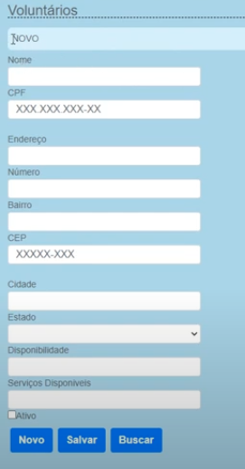
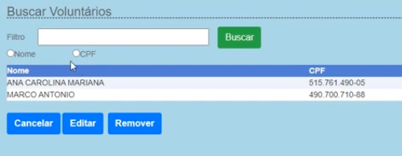
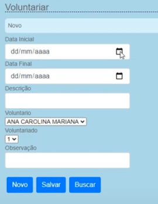
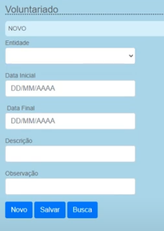

Saiba como realizar cadastro de Voluntários na Arcos!
Descrição sobre os Voluntários
Ao realizar o cadastro no sistema da Arcos, Você poderá escolher entre cadastrar um novo voluntario ou voluntariado,
buscar voluntarios e se voluntariar para ajudar diversas ONGs! Veja em mais detalhes a baixo
Aba Voluntario
 Nessa aba, você podera cadastrar um novo voluntário no sistema ao clicar em salvar após preencher todos
os campos necessarios ou buscar um voluntario ja existente no sistema.
Aba de Busca de Voluntários
 Na aba de busca de voluntários, você podera buscar por Voluntarios através do nome ou CPF, caso quiser ver todos os Voluntarios
já cadastrados é só apenas deixar a aba de busca em branco e clicar em buscar.
Aba Voluntariar
 Nessa aba, você podera se voluntariar para ajudar diversas ONGs apenas preenchento todos os campos acima.
Também você poderá escolher um outro voluntario para se voluntariar escolhendo o nome dele no campo de voluntario como na imagem acima.
Aba Voluntariado
 Na aba Voluntariado, é usado quando as ONGs quiserem voluntários para realizar algum tipo de serviço pra ela,
para realizar a requisição, você devera preencher todos os campos juntamente com o nome da entidade em questão.